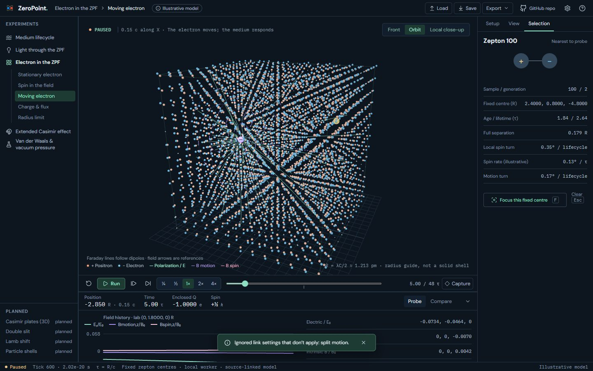
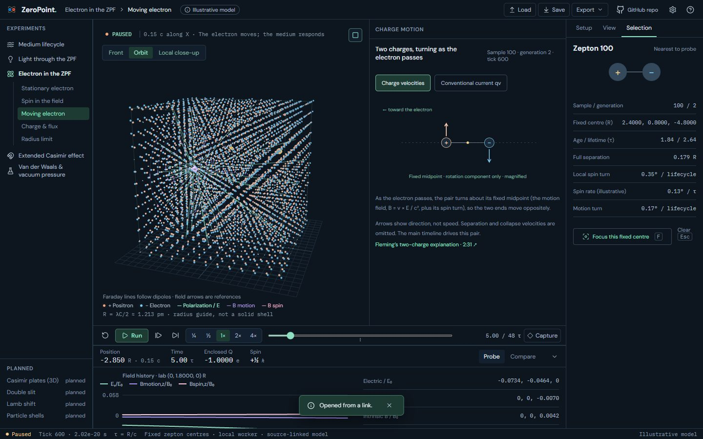
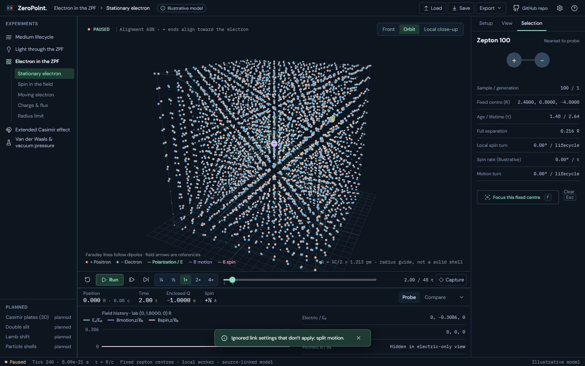
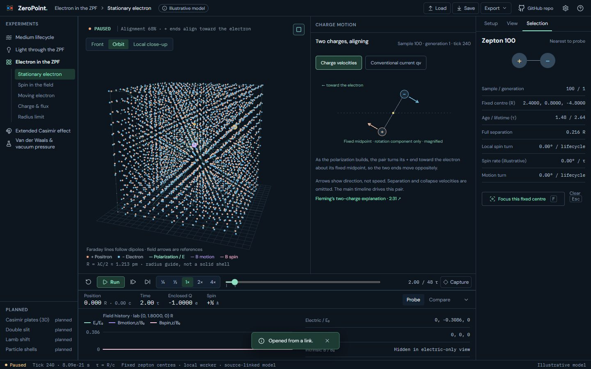
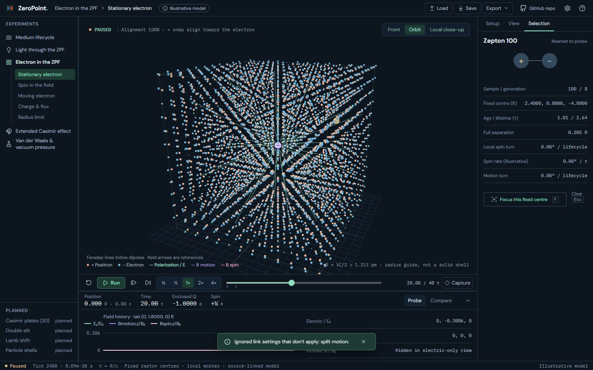
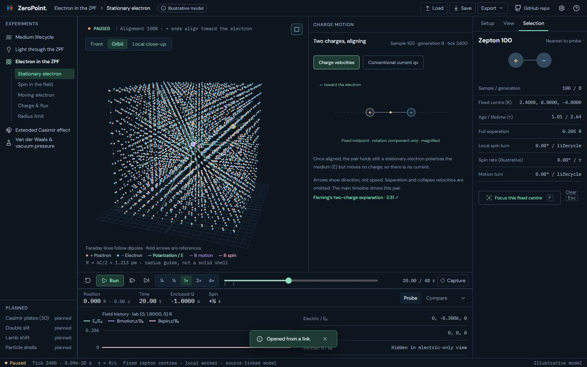

UI 19d: Charge motion in Stationary and Moving: before and after
Electron's Stationary and Moving scenarios gain the optional Charge motion pane (plan §07), following the selected zepton. Before this layer the link's split=motion was ignored, so the 'before' side shows 1-up.
Real screens: "before" runs the layer below, and "after" runs this layer. Click an image to open it at full size. Regenerate with node scripts/compare-screens.mjs --before ../19c-narrow-camera --out docs/ui-previews/19d-electron-motion-pane --set electron-motion --title 'UI 19d: Charge motion in Stationary and Moving' --description 'Electron'\''s Stationary and Moving scenarios gain the optional Charge motion pane (plan §07), following the selected zepton. Before this layer the link'\''s split=motion was ignored, so the '\''before'\'' side shows 1-up.'.
Electron · Moving at tick 600, pair 100: charge velocities




Electron · Stationary at tick 240, pair 100: aligning as the polarization builds




Electron · Stationary at tick 2400, pair 100: aligned and still



